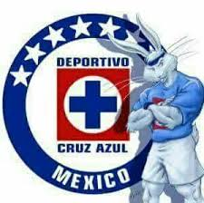

Campeones de la liga mx
Mas veces campeon
- America
- Chivas
- Cruz Azul
Mas populares
- Cruz Azul
- Chivas
- America
- Pumas
- Monterrey
Campeones Clausura
Ver aqui
Campeones Apertura
Ver aqui
Tricampeones
Anerica, Chivas y Cruz Azul
Bicampeones
America, Toluca, Atlas, Leon, Pumas
Un solo titulo
Nunca han ganado la liga mx
Queretaro, ADSL, Juarez, Mazatlan

